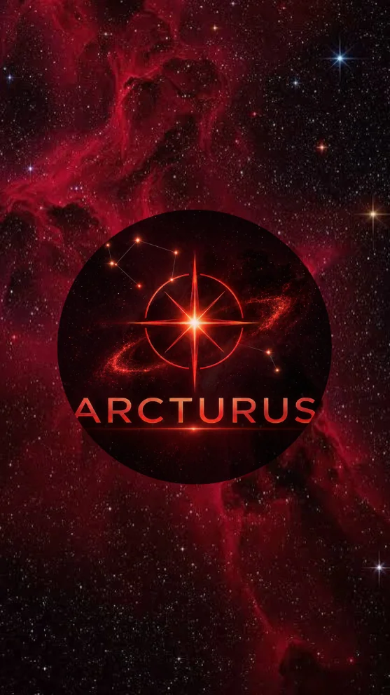

00:00
00/00/0000
00:00
<
↺
>
00/00/0000
<
↺
>
⚙️
Heure de la journée
0 h
6 h
12 h
18 h
24 h
Vitesse du temps
×1 (temps réel)
passé
temps réel
futur
Affichage :
Paysage
Constellations
Atmosphère
Noms des astres
Grille azimutale (azimut et hauteur)
Grille équatoriale (AD et déclinaison)
Écliptique (trajet du Soleil)
Mode nuit (écran rouge)
Objets du ciel profond :
Voie lactée
Galaxies
Nébuleuses
(dont planétaires et rémanents)
Amas
(ouverts et globulaires)
Étoiles :
Visibles jusqu'à la magnitude
6,5
retour à l'accueil